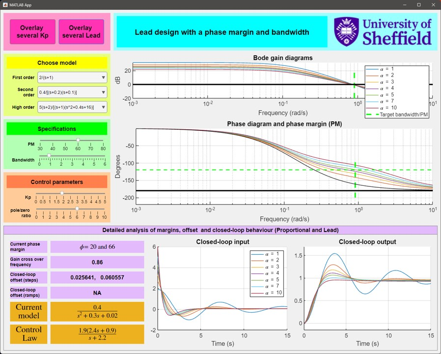
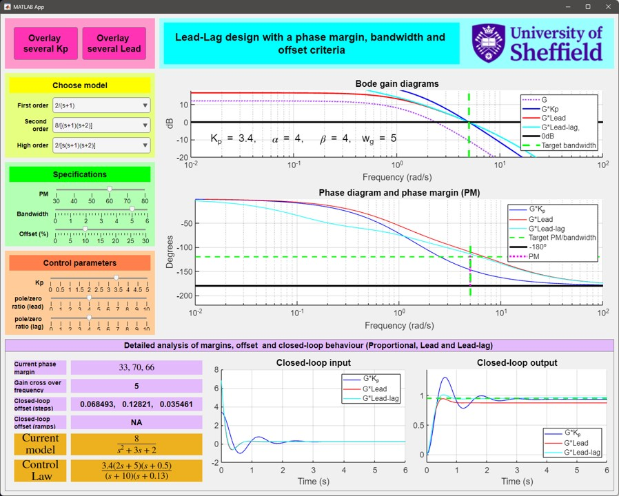

Control 101 Toolbox
Introductory information
Several people have developed MATLAB based materials to support the teaching of “Control Systems 101” type courses; the particular focus here is on interactive and animated resources which are largely self-explanatory, that is easy and quick to use, and support student understanding and learning at an introductory level. They demonstrate authentic scenarios across a broad range of topics which motivate the importance of control to modern society, alongside some technical learning outcomes to support university curricula.The community toolbox project is led by Anthony Rossiter (University of Sheffield) with sponsorship from MathWorks and input from numerous international colleagues (e.g. Ruth Bars (Budapest University of Technology and Economics , Antonio Visioli (Universita di Brescia), Sebastian Dormido (UNED), Lanlan Su (University of Sheffield), Ross Drummond (University of Sheffield)). If you have suggestions or possible contributions, please contact Anthony (j.a.rossiter@sheffield.ac.uk).

Resources are divided into:
1. Virtual laboratories (section 3) which have simple GUI interfaces so students can select buttons and sliders to observe the behaviour of some authentic scenarios and see how different parameter choices affect behaviour. Each virtual laboratory comprises two files which run independently: i) the mlapp file which is the laboratory itself and ii) a partner livescript file which acts like a concise manual giving context, illustrative MATLAB source code and some technical background. Naming conventions are largely self-evident. For example, a typical naming convention for the paired app files is: mixingtank_and_behaviour.mlapp and mixingtank_and_behaviour_manual.mlx. If accessing the apps via the installed toolbox and thus installed apps toolbar, the manual (mlx file) will be opened simultaneously. This link relies on correct path selection, so users who did not install the toolbox, but rather just copied all the files, will need to ensure the relevant folder is on the path.
2. Livescript files (section 2) which focus more on useful MATLAB code students can use to create their own files to support detailed analysis, evaluation and design, as required for university courses and assignments. If accessing the livescript files via the installed toolbox, typing the file name will open a livescript with the filename ending "_mycopy" in the current working directory, so the user can easily make and save any changes.
2. Simulink files (section 4) which support the simulation and analysis of scenarios where there are non-linear components and/or it may be difficult to code a model using simple script files.
A quick list of the available resources is given below, with links to more complete summary information. For a more detailed overview and recent updates, see the website: https://controleducation.sites.sheffield.ac.uk/matlabresources/section-6-11-community-control-toolbox
Some youtube videos https://www.youtube.com/playlist?list=PLs7mcKy_nInHEjth9P3m_bxd6D24IVSzz give quick illustrations of the toolbox and how to use the files.
Within the MATLAB command window:
- doc Control101 Toolbox, will open a separate window which provides softlinks/shortcuts to run to all the files. For MATLAB 2024 you will need to use: doc ("Control101 Toolbox") or doc control101_toolbox.
- help control101 also works, if the toolbox is installed but opens in the command window so is less convenient.
The softlinks in sections 2-4 below will run the files if the toolbox has been installed and MATLAB is open.
Index
This webpage has the following sections.- Getting started
- Contents list and soft links for the livescript files
- Summary of virtual laboratories and softlinks to run files
- Summary of files using simulink
1. Getting started
We assume that the user has downloaded the toolbox from the add-ons button within MATLAB. The toolbox is searched for using the tag 'Control 101' or 'Control101' under the add-ons button.1. All the virtual labs will appear in the apps tab as illustrated here and are started simply by selecting the relevant icon. A copy of the livescript manual will also be opened in the present working directory.

2. To access the livescripts, either use the soft links in this file (section 2.2) or type the name in the command window (as illustrated below); this will open the relevant .mlx file in an editor window as required.
NOTE: When using the installed toolbox, MATLAB will open a copy of the livescript in the present working directory so that the user can make and save edits without changing the toolbox original.

2. Contents List
2.1 List of Virtual Laboratories
More detailed summary information and soft links to the files are in section 3 lower down the page.
| File name | Learning goals |
|---|---|
| TIME DOMAIN METHODS | |
| aeroplanelanding_behaviour | Explore mass-spring damper system behaviour. |
| aeroplanelanding_roll_control | Lead compensator design for an unstable system. |
| behaviours | Effect of pole positions on open-loop behaviour. |
| carmodel_and_behaviour | Explore the behaviour of mass-damper systems and the impact of disturbances. |
| cruisecontrol | Undertake PI design on a mass-damper system with disturbances. |
| dcservo_and_position_control | Undertake PI design of position and velocity control. |
| firstordermodel_behaviour | Understand and explore the core characteristics of 1st order model behaviours. |
| firstordermodels_response_characterisation | Identify model parameters from a step response. |
| HeatExchanger | Explore and understand the natural behaviours of simple heat exchanger systems. |
| housetemperature_and_behaviour | Explore and understand the natural behaviours of simple thermal systems. |
| housetemperature_story | This file takes a user through the entire process of modelling, analysing, controller design and final evaluation, for a thermal system, in the presence of multiple forms of uncertainty. |
| invertedpendulum | Understand and observe the impact of sensor delay and lag on a challenging control problem. |
| mixingtank_and_behaviour | Explore and understand the natural behaviours of a simple mixing tank. |
| tanklevel_and_PIcontrol | Undertake PI design of simple tank level systems. |
| tanklevelbehaviour | Explore and understand the natural behaviours of a tank level system. |
| tanklevel_story | This file takes a user through the entire process of modelling, analysing, controller design and final evaluation, for a fluid system, in the presence of multiple forms of uncertainty. |
| PI tuning | An interactive resource to practice using PI design on a number of systems. Users can use the pre-entered systems or enter selections of their own. |
| PID tuning rules | This resource provides an interactive app file (MATLAB virtual laboratory) which allows users to explore and analyse the tuning of a PID compensators using a range of well known tuning methods. |
| Predator prey models and behaviours | This resource provides an interactive app file which allows users to explore and analyse the behaviour of a common non-linear model representating populations of predators and prey. |
| FREQUENCY RESPONSE METHODS | |
| frequency_response_time_behaviour | Explore and understand the concepts of frequency response in the time domain. |
| proportional_design_phase_margin | This file allows a user to practise simple proportional design using frequency response methods and in particular to focus on achieving a target phase margin. |
| lag_design_phase_margin | This file allows a user to practise simple lag compensator design using frequency response methods and in particular to focus on achieving a target phase margin and low frequency gain (either a ramp or constant offset criteria). |
| lead_design_phase_margin | This file allows a user to practise simple lead compensator design using frequency response methods and in particular to focus on achieving a target phase margin and bandwidth criteria. |
| lead_lag_design_phase_margin | This file allows a user to practise simple lead-lag compensator design using frequency response methods and in particular to focus on achieving, in order specified: bandwidth, phase margin and low frequency gain. |
| lead_lag_design_criteria | This file builds the compensators automatically based solely on the performance criteria (bandwidth, PM and offset) and presents a comparison of the behaviours with the different compensator approaches (proportional, lag, lead, lead-lag). |
| SIMULINK FILES | |
| nonlinear_position_control | This file allows a user to explore the non-linear components in a position control system and their impact on behaviour. |
| nonlinear_tank_control_control101 | This file allows a user to explore the non-linear components in a tank level system and their impact on both open-loop and closed-loop behaviour. |
2.2 Livescript files for learning control basics alongside simple MATLAB code for analysis and evaluation.
The livescript files are written like manuals, so much more information is available once you open them. If you opened this documentation file from within MATLAB and select the name on the left, it should run the releavant livescript file within MATLAB.
| File name | Learning goals |
|---|---|
| TIME DOMAIN METHODS | |
plotting_with_matlab.m
|
Gives a rapid overview of the vector notation used to support line plots and the plot command. | ODEs_with_matlab.m
|
Shows how MATLAB can be used to give both analytic and numerical solutions of ODEs. Includes examples of how to plot the solutions. |
firstordermodels_in_matlab.m
|
Shows how to create models in MATLAB to represent systems. |
firstordermodels_responses_analysis_and_feedback.m
|
A holistic storyline script which begins from modelling 1st order models in time constant form, identifying parameters from data and then moves on to analysis and design of proportional and PI feedback compensators. |
secondordermodels_in_matlab.m
|
Shows how to create models in MATLAB to represent systems |
secondordermodels_and_underdamping.m
|
Illustrates under-damped 2nd order behaviours and the impact of the damping ratio and natural frequency. Uses Laplace based models. |
laplace_transforms_with_matlab.m
|
Shows how to find the Laplace transform of a time domain signal and the inverse Laplace of a transform. Focuses on analytic solutions. Files below this largely focus on numerical solutions. |
partial_fractions_with_matlab.m
|
Partial fractions are a core part of inverse Laplace and understanding behaviours. This file shows how MATLAB can support such computations where required. |
transferfunctions_and_poles.m
|
Shows how to create a transfer function in MATLAB and also to find its poles and zeros which in turn characterise the expected behaviours. |
transferfunctions_and_behaviours.m
|
Shows how to create a transfer function in MATLAB and also to characterise and plot the expected behaviours. |
step_responses_with_matlab.m
|
Step responses are a cornerstone of system behaviours and supported by the MATLAB step.m command. This file illustrates several different ways step.m can be used. |
closedloop_transferfunctions_with_feedback.m
|
Introduces the feedback.m file for computing closed-loop transfer functions. |
closed_vs_openloop_overlay.m
|
Demonstrates code for overlaying the closed-loop responses with different choices of compensator so you can compare and contrast different designs. Allows 3 different compensators but uses transparent (inefficient) coding for simplicity so users can follow the core steps. |
closed_loop_compare_multiple_compensators.m
|
This file provides more efficient coding for comparing numerous compensators on the same system. Allows any number of compensators with minimal changes in the code required (just enter the required system definitions). |
closedloop_offset_and_poles.m
|
Focuses specifically on how to compute the closed-loop poles and offset (percentage). |
PID_tuning_methods.m
|
Introduces a number of popular rules for tuning PID compensators. |
| FREQUENCY RESPONSE METHODS | |
freq_responses_with_matlab.m
|
Introduces users to the concept of frequency response and how the gain and phase might be computed from both time domain responses and with complex algebra (i.e. bode.m). [Needs the file ds2nfu.m to support some internal illustrations.] |
bode_asymptotes.m
|
While modern computing means there is less need to sketch Bode diagrams by hand, some basic insight and understanding into the basic shapes is useful in analysis and design. This file produces asymptote plots to aid such insight. |
proportional_design_with_bode.m
|
A simple proportional design is often based on a phase margin criteria. This livescript explains and illustrates the key steps. |
Stability_Continuous.m
|
This livescript file reviews the main concepts of stability of continuous control systems using several popular methods and summarises the engineering and analytical background alongside some simple MATLAB code snippets that can be used for the equivalent analysis. |
lag_design_with_bode.m
|
This file explains the core steps behind a mechanistic lag design (PM and low freq. gain criteria) and illustrates with examples. |
lead_design_with_bode.m
|
This file explains the core steps behind a mechanistic lead design (PM and bandwidth criteria) and illustrates with examples. |
lead_lag_design_with_bode.m
|
This file explains the core steps behind a mechanistic lead-lag design (PM, low freq. gain and bandwidth criteria) and illustrates with examples. Also compares with a lag design and a lead design. |
lead_lag_design_with_criteria.m
|
This file provides code to perform the mechanistic proportional, lag, lead and lead-lag designs based on criteria (PM, low freq. gain and bandwidth criteria) and illustrates with examples. |
PID_Cont_Controller_Design_with_Pole_Cancellation.m
|
This file explains the core steps behind a mechanistic PID design using a pole cancellation technique and exploiting frequency response methods. |
delays_and_bode.m
|
Real systems are often subject to small delays, perhaps due to actuator placement or measurement issues. This file allows users to explore the impact of delays on expected closed-loop performance and indeed to consider how a system re-design of the compensator may be considered. |
| DISCRETE MODEL AND ADVANCED METHODS | THE FILES BELOW LINK TO DISCRETE SYSTEMS BUT ONLY DO SO AT A RELATIVELY SUPERFICIAL LEVEL AS THIS IS MORE LINKED TO AWARENESS RAISING THAN MEETING THE FORMAL TEACHING REQUIREMENTS NEEDED IN HIGHER LEVEL COURSES |
time_series_models.m
|
This file gives a simple introduction to the concept of a time series/discrete systems and how MATLAB can be used to support modelling and analysis with such tools. |
time_series_models_and_recursion.m
|
Often simulation of a time series model is best handled with a recursion (or loop in code). A simple example of suitable coding is given here. |
discrete_models_and_usage.m
|
More generally control engineers deploy z-transform models to handle discrete systems. This file gives a rapid introduction to the MATLAB tools which facilitate this and thus explains how users might undertake the corresponding analysis. |
discretisation_and_bode.m
|
Real systems are often implemented in a discrete fashion, albeit the design was done using a continuous design method. This file allows users to explore the impact of discretisation and the choice of sample rate on the efficacy of the original design. |
Stability_Discrete.m
|
This livescript file reviews the main concepts of stability of discrete control systems using several popular methods and summarises the engineering and analytical background alongside some simple MATLAB code snippets that can be used for the equivalent analysis. |
discrete_models_and_discrete_PID_controller_design.m
|
This file then focuses on how PID design can be performed in the discrete case using a pole cancellation technique. |
Youla_continuous_controller_design.m
|
Advanced approaches to compensator design to take more explicit account of sensitivity to uncertainty. |
| STATE SPACE METHODS | A series of files covering an introduction to state space models, their analysis and asociated use with feedback. |
statespace_models_control101.m
|
Advanced approaches to compensator design to take more explicit account of sensitivity to uncertainty. |
statespace_models_from_tf_control101.m
|
This file focuses on how equivalent state space models can be determined from transfer function models, both continuous and discrete. |
tf_models_from_statespace_control101.m
|
This file focuses on how equivalent transfer function models can be determined from state space models, both continuous and discrete. |
discrete_time_state_space_models_control101.m
|
This file focuses on how to determine a discrete time state space model, given one already has the continuous time model. Some brief theoretical background is given before focussing on the code. |
statespace_models_from_tf_control101 .m
|
This file focuses on how equivalent state space models can be determined from a transfer function model, both continuous and discrete. |
openloop_behaviour_statespace_control101.m
|
This file focuses on how to infer and explore the expected open-loop behaviour of a state space models, both continuous and discrete. |
phaseplane_behaviour_statespace_control101.m
|
This file focuses on how to infer the expected open-loop behaviour of a state space models, within the phase plane, that is the behaviour of the states rather than the inputs and the outputs. It is interesting to note how this behaviour can be linked to the eigenvalue/vector decomposition of the state matrix. |
equivalent_state_space_formulations_control101.m
|
This file focuses on equivalent forms, that is, state space models which appear different but have the same input-output behaviour. The file gives a brief overview of the underlying relationships and then gives MATLAB code for showing the relationships between two equivalent forms. |
controllability_and_observability_control101.m
|
Controllability and observability are important properties of state space models which determine the extent to which effective state feedback compensators and observers can be implemented. |
state_feedback_control101.m
|
When a system is expressed as a state space model, it is normal to design the closed-loop compensator as a state feedback. This file gives an introduction to the topic and relevant MATLAB code to support the associated design and analysis. |
optimal_state_feedback_control101.m
|
When a system is expressed as a state space model, it is normal to design the closed-loop compensator as a state feedback. This file gives an introduction to the popular method of 'optimal control'. |
observer_design_control101.m
|
In practice the states are not known and need to be inferred or estimated from available measurements; an observer is used for this process. This fie introduces the concept of the observer quickly and then focuses on how to use MATLAB to support his approach. |
tracking_with_statespace_control101.m
|
This resource introduces simple methods for dealing with non-zero constant targets and then looks more systematically at how integral action can be incorporated into a state space framework, with an observer and model uncertainty. |
state_feedback_and_estimation_cont_case_study.m
|
The purpose here is to undertake case studies showing how the different analysis and design tools above can be used to formulate a complete control feedback design. The design method used here is pole placement. |
state_feedback_and_state_estimation_discrete_case_study.m
|
The purpose here is to undertake case studies showing how the different analysis and design tools above can be used to formulate a complete control feedback design for a discrete system. The design method used here is pole placement. |
state_space_and_simulinkfile1_control101.m
|
An introduction to using simulink with state space models and state feedback. Simple scenarios only. Uses Simulink files: state_space_simulinkfile_openloop_control101.slx, state_space_simulink_feedback_control101.slx, state_space_simulink_feedforward_control101.slx. |
state_space_and_simulinkfile2_control101.m
|
Introduces the concepts of feedforward to improve tracking and observers to estimate states. Uses simulink file state_space_simulinkfile_observer_control101.slx |
state_space_and_simulinkfile3_control101.m
|
Introduces integral action into the feedback loop along with an observer. Demonstrates efficacy in presence of uncertainty. Uses Simulink file: state_space_simulink_integral_control101.slx |
3. Summaries of Virtual Labs and soft links
Detailed background and notes are in the livescript manuals which open when you run the apps. If you opened this documentation file from within MATLAB and select the name or icon on the left, it should run the relevant livescript manual file and virtual laboratory within MATLAB (be patient, it may take 20 sec to open both files).| Lab | Learning goals |
|---|---|
First order behaviour characterisationfirstordermodel_response_characterisation.mlapp

|
A simple interface emphasis the core role of the time constant and gain parameters in the step response behaviour and convergence. Allows the user to vary the model parameters and initial condition and visualise the core invariance aspects in the response and how these relate to time constant and gain. User simply moves the sliders and the figure updates. |
First order modelling from datafirstordermodel_behaviour.mlapp

|
A simple interface to practice estimation of time constant and gain from a step response for a 1st order model. The app supports students in being able to make quick and accurate estimates of the time constant and gain and to check the accuracy of their estimates against the true answers. The figure keeps track of multiple attempts so students can iterate intelligently and thus improve their understanding. |
Aeroplane Landingaeroplanelanding_behaviour.mlapp

|
This is a simple interface to understand the modelling and behaviour of simple mass-spring-damper models, but with a mildy humourous animation to help with student engagement. A mass-spring-damper is a simplified model of typical suspension systems and the landing of an aircraft is a nice example of suspension in action. We want to determine whether passengers are comfortable. This app allows users to investigate the impact of different masses, dampers and springs on the landing behaviour; implicitly this is linked to a understanding of under-damped 2nd order responses. |
Simple car model behaviourcarmodel_and_behaviour.mlapp

|
This app allows users to investigate the dependence of a car speed behaviour on simple parameters such as car mass, friction, engine power, road slope and wind. It also has a figure to emphasise the computation of an equivalent first order model in time constant form. The lower figures store previous simulations so the user can observe trends and understand design principles. Animation effects in the top figure also bring some life and visualisation to the app. |
Cruise Control with PI compensationcruisecontrol.mlapp

|
We consider a car can be represented as a simple mass-damper model, the damping representing friction which is assumed proportional to velocity and throttle position gives effective force on the road. We wish to control the speed of the car and also, subject to wind and slope variations so a PI compensator is adopted. This app allows the user to explore the impact on closed-loop behaviour of variations in the car and PI parameters and disturbances. |
Mixing tank behaviourmixingtank_and_behaviour.mlapp

|
We consider a tank with inlet and outlet pipes and a constant flow rate. The inlet concentration is not the same as the outlet concentration and thus, assuming good mixing, the tank will gradually change concentration (colour). A typical model is given as: V (dC/dt) + F C = F Cin where V is the tank volume, F is the flow rate, C is the concentration in the tank and Cin is the concentration of the inlet flow. In practice there may also be a reaction taking place within the tank that affects concentration dynamics and also disturbances to the inlet concentration. |
Heat exchanger behaviourHeatExchanger.mlapp

|
We consider a heat exchanger with inlet and outlet pipes and a constant flow rate. The inlet temperature is not the same as the outlet temperature due to supplied heating and thus, assuming good mixing, the inlet flow will gradually change temperature, represented by colour, in the tank. In practice there may also be a disturbances to the inlet temperature and flow rate, as well as changes in tank volume and heating; users can investigate the associated behaviours with this app. |
House temperature behaviourhousetemperature_and_behaviour.mlapp

|
Allows the user to investigate the behaviour of a thermal system, here represented by a simple house heating model. The user can change the size of the house (thermal capacity), wall thickness/insulation (heat loss), heat supply, external temperature and initial condition. This app allows the user to explore/overlay the impact of different choices on the behaviour. Red represents hot and blue represents cold. |
House temperature storyhousetemperature_story.mlapp

|
Allows the user to investigate the open- and closed-loop behaviour of a thermal system, here represented by a simple house heating model. The user can change the size of the house (thermal capacity), wall thickness/insulation (heat loss), heat supply, external temperature, wind chill and initial condition. This app allows the user to explore/overlay the impact of different choices on the behaviour and also the efficacy of different feedback design methods (manula, PI, on-off), in the presence of multiple sources of uncertainty. Red represents hot and blue represents cold. |
Tank level behaviourtanklevelbehaviour.mlapp

|
How quickly and where does the level in a tank settle given a fixed in flow, and variable area/outlet resistance? The figure gives a visualisation of the tank attributes so users can: i) manually (through yellow sliders) change the area/outlet resistance and in-flow; ii) modify the environment/disturbances (green sliders) and iii) simulate to see the actual behaviour, time constant and gain.
|
Behaviours of linear modelsbehaviours.mlapp

|
Allows the user to investigate the impact of pole positions on linear system behaviour. Allows real, complex and unstable poles. Three different tabs:
|
Behaviours of non-linear models: Predator-prey systemsPredator_prey_model.mlapp

|
Predator prey models are an example of a non-linear ystem. Non-linear systems have far more complex and sometimes complicated behaviour compared to linear systems and at times appear to behave in a somewhat chaotic fashion. This scenario also implicitly contains feedback between the different model states. The scenarios and choices in the app allow for relatively simple changes in the parameters, but these are enough for users to observe and understand the associated complexity of the behaviours. |
Tank level control with PItanklevel_and_PIcontrol.mlapp

|
Investigate the depth level control of a tank with a PI design, Use sliders to select PI values and the dimensions of the tank. Uncertainty is included in two forms: (i)
A small disturbance in-flow (either added throughout ir introduced mid-simulation) and (ii)
A partial blockage of the outlet pipe (either continuous, or considered as an impact on a steady-state start point).
|
Tank level Story file tanklevel_story.mlapp

|
This file takes a user through the entire process of modelling, analysing, controller design and final evaluation, for a tank level system, in the presence of multiple forms of uncertainty. Different tabs move the user along the storyline. The first tab explores open-loop behaviour and the impact of flow disturbances and blockages to hte outlet pipe. The second tab focuses on modelling in time constant form. The third tab covers manual control subject to uncertainty. The fourth tab introduces PI design and the fith tab is an opportunity to evaluate the final PI design, subject to more varied uncertainty, so including sensor delays and measurement noise.
|
PI tuning practicepi_tuning.mlapp

|
Allows the user to practice doing some PI designs on a range of simple systems with fixed dynamics. The closed-loop has a simple standard block diagram as shown, with C(s) the compensator and G(s) the system. The custom tab allows the user to enter a system of their own choice. |
PID tuning methodspidtuningrules.mlapp

|
Allows the user to practice using some standard PID tuning methods on a range of simple systems with fixed dynamics. Inlcudes Ziegler Nichols, Cohen Coon, Amigo, One third, Skogestad and Lambda tuning. |
DC servo speed and position controldcservo_and_position_control.mlapp

|
We consider a DC servo driving a simple passenger on a seat along a track. This app allows the user to investigate both open-and closed-loop behaviour. How does open-loop behaviour change with different loads, frictions, gear ratios and so forth? Can we design an effective PI compensator for either or both speed and position control? Users can also add an additional transient friction as a realistic disturbance type. |
Inverted pendulum controlinvertedpendulum.mlapp

|
Allows the user to investigate the impact of real environmental issues on the control of an inverted pendulum. For example: (i) Lag in decision making/actuation associated to a DC servo driving cart motion; (ii) Lag in decision making with human control and (iii) The impact of delay associated to human decision making. This app allows the user to explore/overlay the impact on closed-loop behaviour of variations in the the choices above. |
Frequency response in the time domainfrequency_response_time_behaviour.mlapp

|
This is a simple interface to understand the concept of frequency response in a time domain scenario. Users can excite a variety of linear systems with a sinuosidal input and view the system responses. The figures are presented in such a way that users can infer the implied gain and phase shifts of the output relative to the input. Numerical calculations are also provided. More detailed technical and analytical background is provided in the partner livescript file. This file also includes some simple MATLAB code snippets than can be used for equivalent analysis. |
Proportional design using frequency domain methods and a phase margin criteriaproportional_design_phase_margin.mlapp

|
This resource provides an interactive app file (MATLAB virtual laboratory) which demonstrates how to perform a simple gain feedback design using Bode diagrams and a phase margin criteria. The app inlcudes a number of pre-coded examples and allows the user to investigate both how to meet the PM requirement, and the impact of this on closed-loop behaviour. The manual and app also give guidance on a mechanistic design to achieve a specified phase margin. The app also allows the user to investigage he impact of a small system delay on margins and behaviour. |
Lag compensator design using frequency domain methods with phase margin and low frequency gain criterialag_design_phase_margin.mlapp

|
This resource provides an interactive app file (MATLAB virtual laboratory) which demonstrates how to perform a simple lag compensator feedback design using Bode diagrams with a phase margin and low frequency gain criteria. The app includes a number of pre-coded examples and allows the user to investigate both how to meet the requirements and the impact of this on closed-loop behaviour. The manual and app also give guidance on a mechanistic design to achieve the specified criteria. The low frequency gain criteria takes two alternative forms depending upon whether the system includes and integrator or not. For completeness the behaviour with the lag compensator is compared with a simple gain design, so the differences can be evaluated. |
Lead compensator design using frequency domain methods with phase margin and bandwidth criterialead_design_phase_margin.mlapp
 |
This resource provides an interactive app file (MATLAB virtual laboratory) which demonstrates how to perform a simple lag compensator feedback design using Bode diagrams with a phase margin and bandwidth criteria. The app includes a number of pre-coded examples and allows the user to investigate both how to meet the requirements and the impact of this on closed-loop behaviour. The manual and app also give guidance on a mechanistic design to achieve the specified criteria. |
Lead-Lag compensator design using frequency domain methods with phase margin, bandwidth and low frequency gain criterialead_lag_design_phase_margin.mlapp
 |
This resource provides an interactive app file (MATLAB virtual laboratory) which demonstrates how to perform a simple lead-lag compensator feedback design using Bode diagrams with a phase margin, bandwidth and low frequency gain criteria. The app includes a number of pre-coded examples and allows the user to investigate both how to meet the requirements and the impact of this on closed-loop behaviour. The manual and app also give guidance on a mechanistic design to achieve the specified criteria. The low frequency gain criteria takes two alternative forms depending upon whether the system includes and integrator or not. For completeness the behaviour with the lead-lag compensator is compared with a simple gain design and a lead compensator only so the differences can be evaluated. |
Comparison of criteria based designs for proportional, lag, lead and lead-lag compensator design lead_lag_design_criteria.mlapp

|
The apps above establish that proportional, lag, lead and lead-lag design can be tied explicitly to the design criteria of phase margin, bandwidth and offset. Consequently, fix the criteria and the design is also fixed. This app allows users to compare and contrast the behaviour and performance of different compensators arising from such a criteria based design approach and indeed, to observe that criteria are not always achievable. |
Aeroplane roll controlaeroplane_roll_control.mlapp

|
Allows the user to investigate the efficacy of simple lead compensation for controlling the roll angle of a simple aircraft.
|
Non-linear position controlnonlinear_position_control.mlapp

|
This resource provides an interactive app file (MATLAB virtual laboratory) which demonstrates core learning outcomes linked to nonlinear bahviour. First, investigate the dynamics of position control system based on a DC servo and then consilder the impact of different nonlinear components in the system such as: measurement noise, input saturation, backlash and parameter uncertainty. Users can also change core parameters to perform compare and contrast simulations with different assumptions. The manual and app also give guidance on the underlying scenario and how to use the simulink files directly. |
Non linear tank level system and controlnonlinear_tank_control_control101.mlapp

|
This resource provides an interactive app file (MATLAB virtual laboratory) which demonstrates two core learning outcomes. First, how the dynamics of tank exhibit non-linear behaviour in the open-loop; this is solely available within the livescript manual file. Secondly, it introduces feedback and a number of other external and non-linear impacts such as measurement noise, input saturation, anti-windup, disturbances and parameter uncertainty. Users can also change core parameters to perform compare and contrast simulations with different assumptions. The manual and app also give guidance on the underlying scenario and how to use the simulink files directly. |
4. Simulink files
This section is intended to introduce users to simulink and its use for supporting modelling, simulation and control. As befits a control101 course, the emphasis is on simple or low complexity models and straightforward simulink components and usage. The files available and some soft links are summarised here.The associated simulink files will not always open automatically, but their names are given within the associated livescript file and you can open them with the command: >> open filename.slx

| File name | Learning goals |
|---|---|
| FILES USING A VIRTUAL LABORATORY AND APP INTERFACE | |
myfirstsimulink_control101.mlapp
|
Two other files are opened automatically: i) the manual (myfirstsimulinkfile_control101_manual.mlx ) which gives detailed step-by-step instructions and ii) a simulink file containing the components required for the tasks. Introduces students to the concept of constructing the block diagrams within the simulink window, while not exposing them too much to data entry and simulation. The tasks encourage the user to become familiar with a limited toolset and also how data is returned to the workspace. |
|
LIVESCRIPT AND M-FILES The soft links below open the livescript which includes detailed instructions and code snippets to run the underlying simulink files. |
|
intro_to_simulink_for_system_behaviour.m
|
A brief introduction to the use of simulink to model systems with some simple components. Also shows how integration with MATLAB code can make running the simulink file very efficient to allow systematic investigations for a range of parameter values. Makes use of the following paired files which are clearly called within the main livescript file: simulink_openloop_model_control101.slx, simulink_openloop_model_control101_script.m, simulink_openloop_modelb_control101.slx, simulink_openloop_modelb_control101_script.m, simulink_openloop_modelc_control101.slx, simulink_openloop_modeld_control101_script.m, simulink_openloop_modeld_control101.slx, simulink_openloop_modeld_control101_script.m. |
hydraulic_system_simulink_control101.m
|
Simulink offers the opportunity to consider different arrangements of tanks and to manage the interconnections without having to manipulate into a single large state-space model for simulation in MATLAB, as well as the chance to add non-linear components ass required. This resource compares parallel and series arrangements of tanks (Hydraulic_System_control101.slx, Hydraulic_Systemb_control101.slx). The required parameter values definition, simulation and plotting are handled within the livescript. |
car_suspension_simulink_control101.m
|
Introduces a car suspension scenario where the car drives over a ramp in the road at different speeds. It also illustrates common sources and sinks that can be used for importing and exporting data. It also shows how deviation variables can be defined within the model and corrected to absolute values for plotting. All the simulation variables, model data and simulation are handled within the livescript. The simulink file is: car_suspension_control101.mlx |
submersible_system_simulink_control101 .m
|
The file is a brief introduction to the use of simulink to model and simulate a simple autonomous underwater vehicle; there are some non-linear elements. Simulink allows a simple and transparent implementation of the state dependencies with these nonlinear components, using transfer function blocks and lines as shown in the two simulink files:submersible_System_control101.slx, submersible_System_nonlinear_control101.slx |
heating_system_simulink_control101.m
|
This illustration shows how using simulink allows the easy inclusion of non-linear, or other, components which are not so simple to enter into MATLAB code. The code here introduces two forms of non-linearity, that is delay and dead-zones when switching sign. The simulink model is in the file: Heating_System_control101.slx |
position_system_simulink_control101.m
|
A brief introduction to the use of simulink to model and simulate a simple position system which uses a DC motor to move a lever. Allows systematic investigations for a range of parameter values and the inclusion of non-linear components. This livescript file defines the required parameters and runs the simulations within sections. It makes use of the following 3 simulink files: Position_system_control101.slx, Position_system_saturation_control101.slx, Position_system_backlash_control101.slx |
nonlinear_position_control.mlapp
|
This resource provides an interactive app file (MATLAB virtual laboratory) which demonstrates core learning outcomes linked to nonlinear bahviour. First, investigate the dynamics of position control system based on a DC servo and then consilder the impact of different nonlinear components in the system such as: measurement noise, input saturation, backlash and parameter uncertainty. Users can also change core parameters to perform compare and contrast simulations with different assumptions. The manual and app also give guidance on the underlying scenario and how to use the simulink files directly: nonlinear_position_control.mlapp nonlinear_position_system_control101_manual .mlx non_linear_Position_System_control101.slx |
nonlinear_tank_behaviour_control101.mlapp
nonlinear_tank_control_control101.mlapp
|
This resource provides an interactive app file (MATLAB virtual laboratory) which demonstrates two core learning outcomes. First, how the dynamics of tank exhibit non-linear behaviour in the open-loop; this is solely available within the livescript manual file. Secondly, it introduces feedback and a number of other external and non-linear impacts such as measurement noise, input saturation, anti-windup, disturbances and parameter uncertainty. Users can also change core parameters to perform compare and contrast simulations with different assumptions. The manual and app also give guidance on the underlying scenario and how to use the simulink files directly: nonlinear_tank_control_control101.mlapp nonlinear_tank_system_simulink_control101_manual.mlx non_linear_tank_system_control101.slx non_linear_tank_system_fbk_control101.slx |
Copyright 2024 The MathWorks™, Inc.